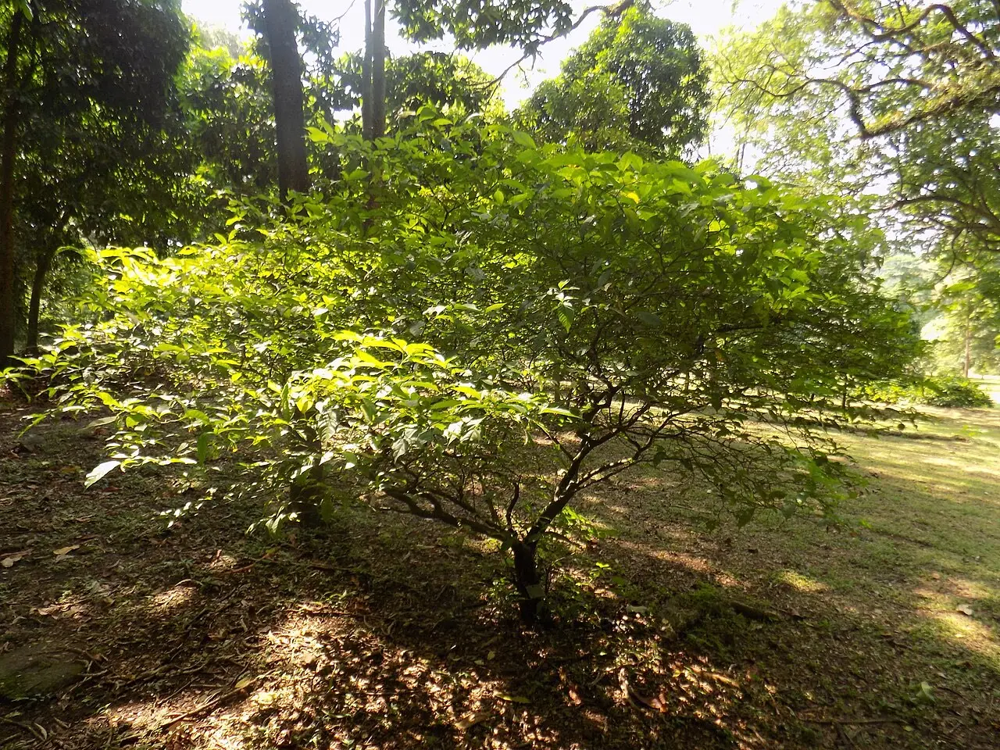

Articles
Every entry is sourced, dated, and written for a careful non-specialist. Start with the overview; go as deep as you like.

Ibogaine: What the Evidence Shows in 2026
One entry that compresses the field: what ibogaine is, what has actually been observed in humans, how strong that evidence is, and where the honest uncertainties lie.
Read entry →
The Pharmacology of Ibogaine: Targets, Kinetics, Metabolism
Ibogaine binds an unusually broad set of receptors at moderate affinity, then hands off to a long-lived metabolite. A technical but readable tour of what is known — and how much of it comes from animal data.
Read entry →
Every major ibogaine study, summarized
The human evidence on ibogaine, study by study: opioid withdrawal in St Kitts, Mexico and New Zealand, the 2024 Stanford veterans study, heart monitoring data, and the trials now completed. Each entry names who was treated and what changed.
Read entry →How Ibogaine Interrupts Opioid Withdrawal: Candidate Mechanisms
Suppressing withdrawal without an opioid substitute is ibogaine's signature anomaly. Four candidate mechanisms, the evidence behind each, and why the answer is probably 'several at once'.
Read entry →
Noribogaine: Pharmacokinetics of the Long Tail
Ibogaine's most important property may be what it turns into. The kinetics of noribogaine — formation, distribution, clearance — and why a metabolite explains the clinical timeline.
Read entry →
The Stanford MISTIC Study: A Close Read
The 2024 Nature Medicine study that moved ibogaine into mainstream research: what was actually measured in 30 veterans, how large the effects were, and precisely which conclusions the design supports.
Read entry →
A Short History of Ibogaine Science, 1901–2026
From a French pharmacology lab to a Nature Medicine paper: the century-long, repeatedly interrupted scientific career of one alkaloid, in five periods.
Read entry →
Beyond Ibogaine: Tabernanthalog and Engineered Analogs
Chemists are dismantling ibogaine into its useful parts: analogs that keep the anti-addictive pharmacology while shedding the 24-hour experience. The science, the candidates, and the question they secretly answer.
Read entry →
Open Questions: What Rigorous Ibogaine Trials Must Answer
Funding has arrived; design questions remain. The five questions a credible ibogaine trial program has to answer, and what a passing grade would look like for each.
Read entry →Ibogaine vs. Suboxone and Methadone: An Honest Comparison
Maintenance medications have decades of evidence; ibogaine has a striking signal and no completed controlled trial. How the two strategies actually differ, who each fits, and why the honest answer isn't a rivalry.
Read entry →
What does ibogaine do to opioid withdrawal?
In three studies of people dependent on opioids, withdrawal scores fell sharply within about three days of a single supervised treatment. The relief came with a serious risk to the heart's rhythm, which is why screening and monitoring shape every part of treatment.
Read entry →Wondering if ibogaine fits your situation?
Six questions, two minutes. A straight answer, and we'll tell you honestly if it's no.